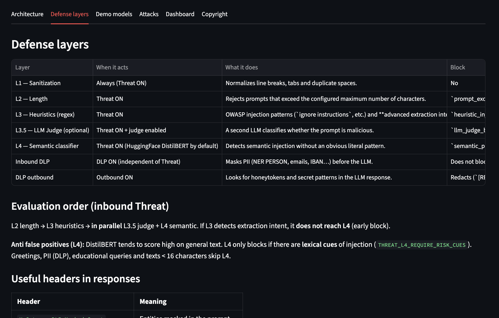

Threat-model the LLM feature, not the model card
STRIDE still works when a language model sits in the middle — if you treat the model as an untrusted component.


Teams shipping a chatbot often start from the vendor’s model card: training data, eval scores, “we do not store prompts.” That is useful procurement language. It is not a threat model of your feature. The feature is: a user (or another service) sends text, you retrieve context, you call a model, you maybe invoke a tool, you write something back into a ticket, a wiki, or a database.
I threat-model that the same way I threat-model any other service: STRIDE on the data flow, then decide which steps may be automated and which need a human gate. CTMP for the method; CAISP for the LLM-specific failure modes (prompt injection, RAG poisoning, tool abuse). The model is a component you do not fully control — closer to an untrusted parser than to a trusted employee.
A small STRIDE map
| STRIDE | Where it shows up in an LLM feature |
|---|---|
| Spoofing | Acting as another user, another system prompt, or another tool’s identity. |
| Tampering | Retrieved documents, conversation history, or tool arguments the model did not intend. |
| Repudiation | No durable log of prompt, retrieval set, model, and tool calls. |
| Information disclosure | PII and secrets in prompts or in what the model echoes outbound. |
| Denial of service | Unbounded context, recursive tool loops, cost blow-ups. |
| Elevation of privilege | A tool allowlist that is really “the model may call anything the API key can.” |
None of that requires a new framework. It requires a diagram (who talks to whom), a list of trust boundaries, and mitigations you can actually operate: authn in front of the proxy, DLP on the wire, allowlists for tools, evals in CI, logs you can query.
The human gate is the same idea as a Vault ceremony
At Swisscom I automated a lot of secrets operations. I did not automate the last step of a rekey. PIN, passphrase, quit — those stay human. LLM features have the same shape. Drafting a STRIDE list from a diagram is a good job for a model. Accepting a mitigation as done is not. The pipeline I built for threat modeling (diagrams in, STRIDE threats and mitigations out) is only useful if a person signs the output.
Policy-as-code is how you scale the rest: the rule that “this tool is not callable from this app” should
run on every request, not in a reviewer’s head. Same habit as OPA on a merge request, applied to tool
calls instead of :latest tags.
What I am not claiming
A STRIDE session is not a red-team engagement. Regex plus a classifier will not catch every injection. A model card is not an SBOM. The useful claim is smaller: if the LLM is just another component in the SDLC, it gets the same treatment as the rest of the factory — a diagram, a control on the wire, a test you can rerun, and a human on the few steps that must never be casual.
Related: security as a Base URL · evals instead of a chat screenshot.